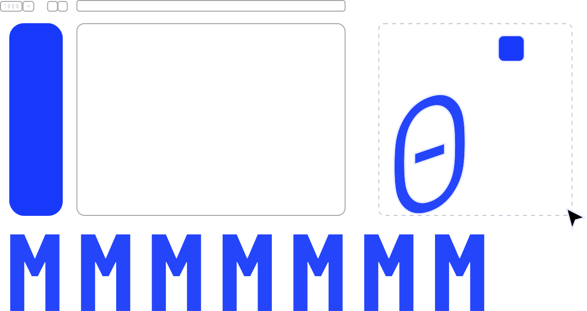
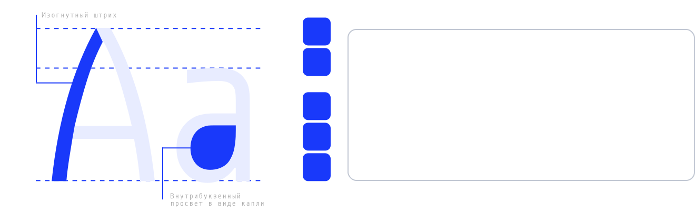
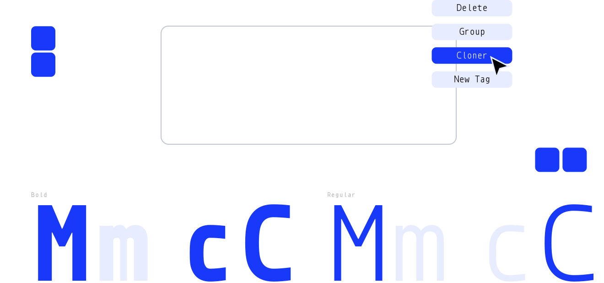
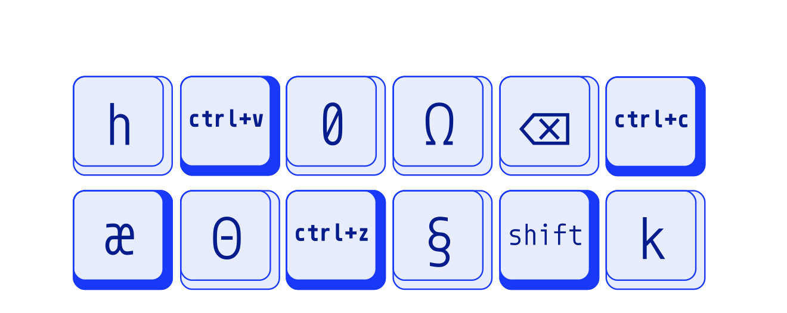
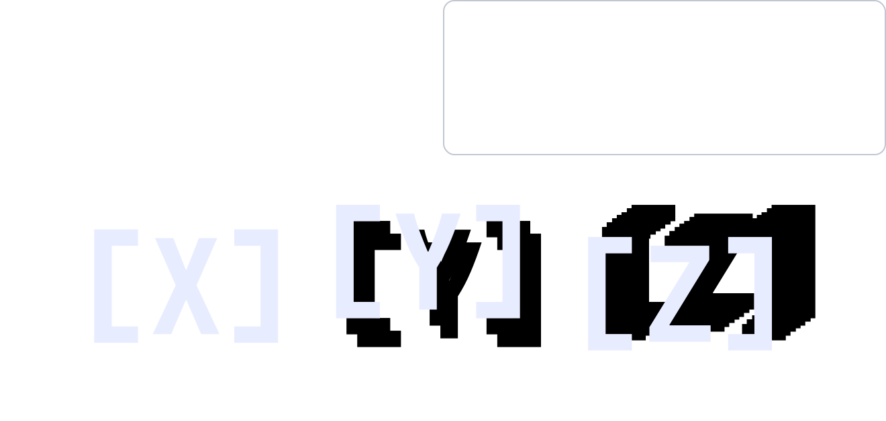

3D-приложение для работы с текстом: поддержка редактирования в сцене, материалы, физические деформации, набор эффектов, управление освещением и камерами, а также экспорт высокого качества.
Для нашего 3D-программного обеспечения был выбран моноширинный шрифт, так как он обеспечивает четкое выравнивание символов, удобство чтения и стабильное отображение интерфейсных элементов
Это моноширинный шрифт, созданный специально для программистов и дизайнеров интерфейсов. Каждый символ в нём занимает одинаковое горизонтальное пространство, что делает текст идеально выровненным по колонкам
В приложении доступна коллекция различных материалов. Пользователь может выбрать из готовой библиотеки, так и создать собственные
Благодаря гибким настройкам этот инструмент позволяет дизайнерам быстро клонировать текст. Он удобен как для профессионалов, так и для начинающих пользователей
Это самые ходовые горячие клавиши, которые используют для ускорения работы
Если нужно подчеркнуть форму текста, можно настроить сцену с освещением. Приложение позволяет выбирать тип источников света, регулировать их направление и интенсивность
Функция, которая придаёт плоскому тексту или объекту объём. По сути, она «вытягивает» форму вперёд или назад по оси
